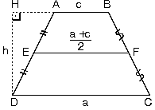

Yamuk
Bu ders notumuzda önemli konularımızdan biri olan Yamuk, Yamukların genel özellikleri, Yamuk ile ilgili alan ve uzunluk hesaplamaları ile ilgili bilgileri bulabilirsiniz.
| Alt ve üst kenarları paralel olan dörtgenlere yamuk denir.Şekildeki ABCD yamuğunda [AB] // [DC] dir. |
|
1. Yamukta açılar
- Karşılıklı iki kenarı paralel olan dörtgenlerde açıortay verilmiş ise ikizkenar üçgen elde edebileceğimiz gibi, ikizkenarlık verilmiş ise de açıortay elde ederiz.
|
|
2. Yamuğun Alanı
| ABCD yamuğunda paralelkenarlar arasındaki uzaklığayamuğun yüksekliği denir. Alt tabanı |DC| = a,üst tabanı |AB| = c
yüksekliği |AH| = h
ABCD yamuğunun alanı
|
|
3. İkizkenar Yamuk
| Paralel olmayan kenarları eşit olan yamuklara ikizkenaryamuk denir. |
|
| a. İkizkenar yamukta taban ve tepe açıları kendiaralarında eşittir.m(A) = m(B) = y
m(D) = m(C) = x |
|
| b. İkizkenar yamukta köşegen uzunlukları eşittir.Köşegenlerin kesiştiği noktaya E dersek|AE| = |EB|
|DE| = |CE| |
|
- Köşegen uzunlukları birbirine eşit olan her yamuk ikizkenardır.
| c. İkizkenar yamukta üst köşelerden alt tabana diklerçizilmesiyle ADK ve BCL eş dik üçgenleri oluşur.|DC| = a|KL| = c
|
|
4. Dik Yamuk
| Kenarlarından biri alt ve üst tabana dik olan yamuğa dikyamukdenir.|AD| = h aynı zamanda yamuğun yüksekliğidir. |
 |
5. Yamukta Orta Taban
| a. ABCD yamuğunda E ve F kenarların orta noktaları ise EL doğrusuna orta taban denir.[AB] // [EF] // [DC]
|
|
Yamuğun alanı
 |
olduğundan |
|
 |
| A(ABCD)=Orta taban x Yükseklik |
| b. Yamukta köşegenin orta tabanda ayırdığı parçalar |
|
- ABCD yamuğunda EF orta taban
|
|
| 6. Yamuğun köşegenlerinin kesim noktasından tabanlaraçizilen paralel;ABCD yamuğunda L köşegenlerin kesim noktasıdır.
[AB] // [MN] // [DC]
|
|
7. Kenar Uzunlukları Bilenen Yamuk
| Bir ABCD yamuğunun kenar uzunlukları biliniyor ise kenarlardan birine paralel çizilerek bir paralelkenar ve bir üçgen oluşturulur. |
|
8. Köşegenleri Dik Kesişen Dik Yamuk
| ABCD dik yamuğunda[AC] ^ [BD] BD ye paralel çizildiğinde oluşan dik üçgende
|
|
9. Köşegenleri Dik Kesişen İkizkenar Yamuk
| ABCD yamuğunda|AD| = |BC|
[AC] ^ [BD]
yamuğun yüksekliği
|
|
| 10. Yamukta Köşegenlerin Ayırdığı Parçaların AlanıHerhangi bir yamukta köşegenler çizildiğinde[AB] // [DC]
|
|
| Bir yamukta alt ve üst iki köşenin, karşı kenarın ortanoktası ile birleştirilmesi sonucu oluşan alan yamuğunalanının yarısına eşittir.
|BE| = |EC|
|
 |
| l [AB] // [EF] // [DC], |AB| = a|EF| = b
|DC| = c
A(ABFE) = S2
A(EFCD) = S1
|